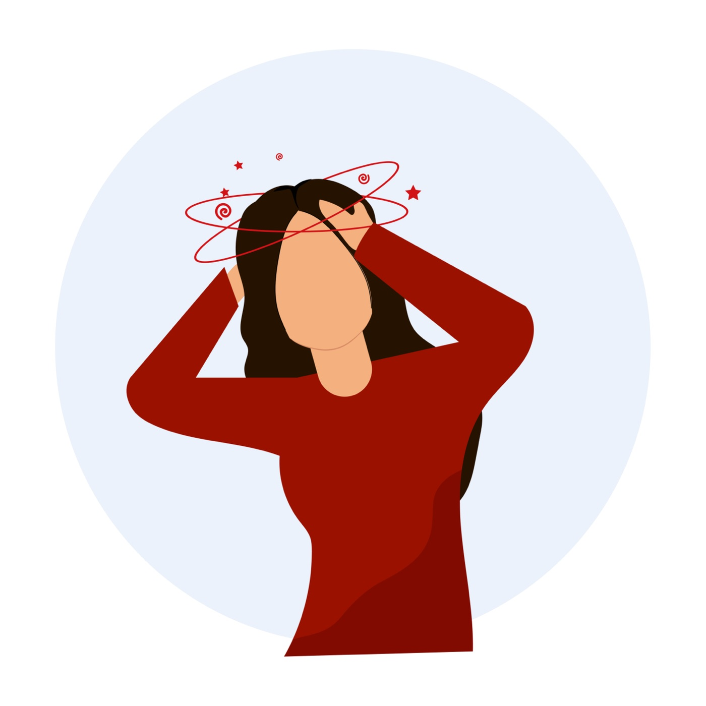

Сохраните в телефоне
Шпаргалки и инфографика
Алгоритмы, критерии и шкалы на одной странице — чтобы держать под рукой на приёме. Каждую можно скачать в PDF.
64шпаргалки

Головокружение·24.09.2026·2 мин·PDF
Дифференциальная диагностика центрального и периферического вестибулярного синдрома

Нейроиммунология·17.09.2026·2 мин·PDF
Диагностические критерии аутоиммунного энцефалита (Graus F., 2016)

Рассеянный склероз·10.09.2026·1 мин·PDF
Алгоритм оценки сроков эффективности ответа на терапию ПИТРС
Когнитивные нарушения·02.09.2026·2 мин·PDF
Опросник функциональной активности (Functional Activities Questionnaire, FAQ)
Головокружение·24.09.2026·2 мин·PDF
Дифференциальная диагностика центрального и периферического вестибулярного синдрома
Нейроиммунология·17.09.2026·2 мин·PDF
Диагностические критерии аутоиммунного энцефалита (Graus F., 2016)
Рассеянный склероз·10.09.2026·1 мин·PDF
Алгоритм оценки сроков эффективности ответа на терапию ПИТРС
Когнитивные нарушения·02.09.2026·2 мин·PDF